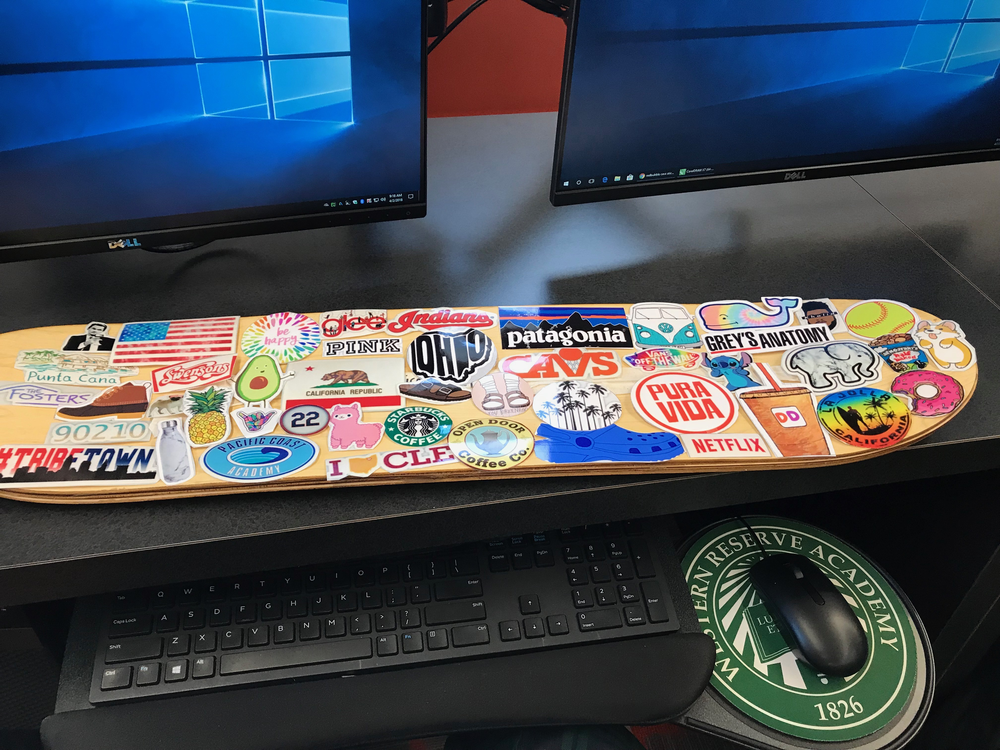
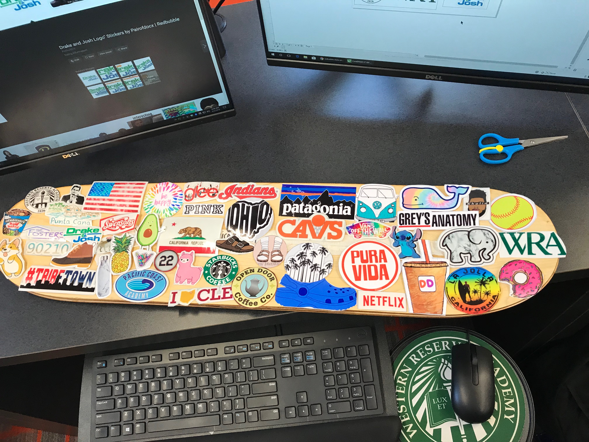
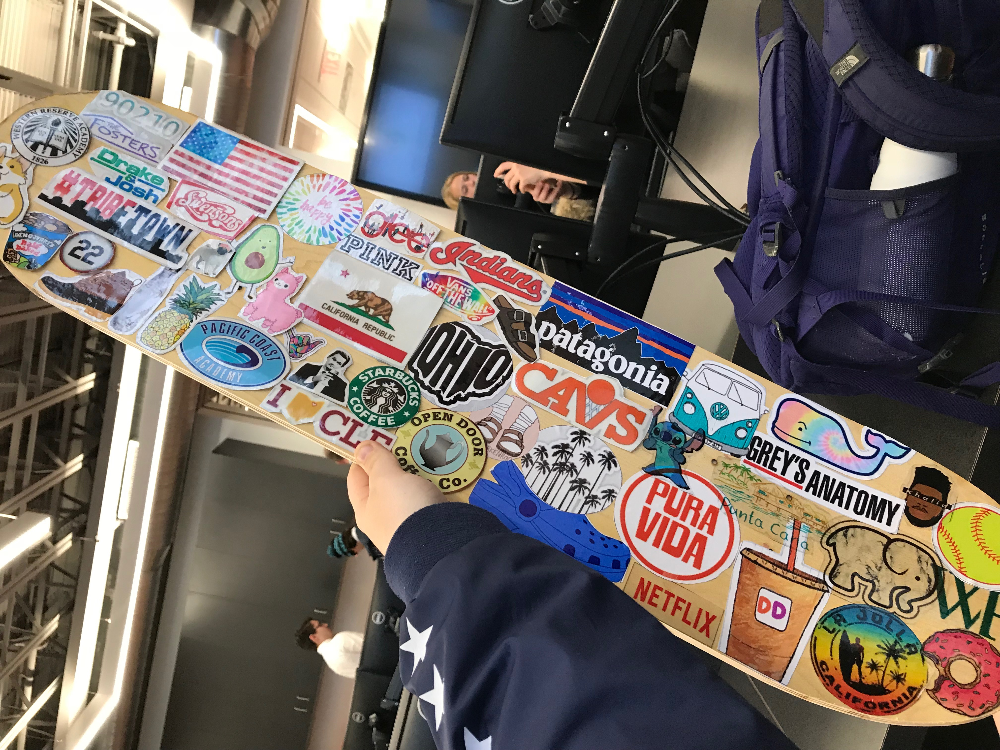

Rotation 7: Lamination and Vacuum Forming
Project Description:
This rotation, we made skateboards! We starting by picking a regular or longboard, I picked a regular. This project has been my favorite of the class so far. There were seven pieces of wood, all different types of wood that had to go in a specific order, that all were glued together with wood glue and then put into a vaccum sealed bag. After that we sanded the edges with sanders and with the wood cutting machines. These machines were new to me, but I found them very easy and fun to use. I then printed out about 55 stickers of things that I like and put them all on my skateboard. I printed all of the stickers on the vinyl sticker cutter and it took a very long time to print all of them out. I then put a clear gloss coat overtop.


